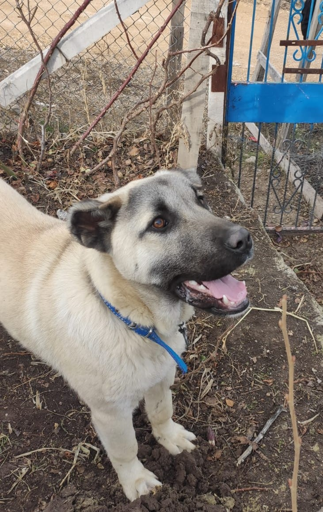
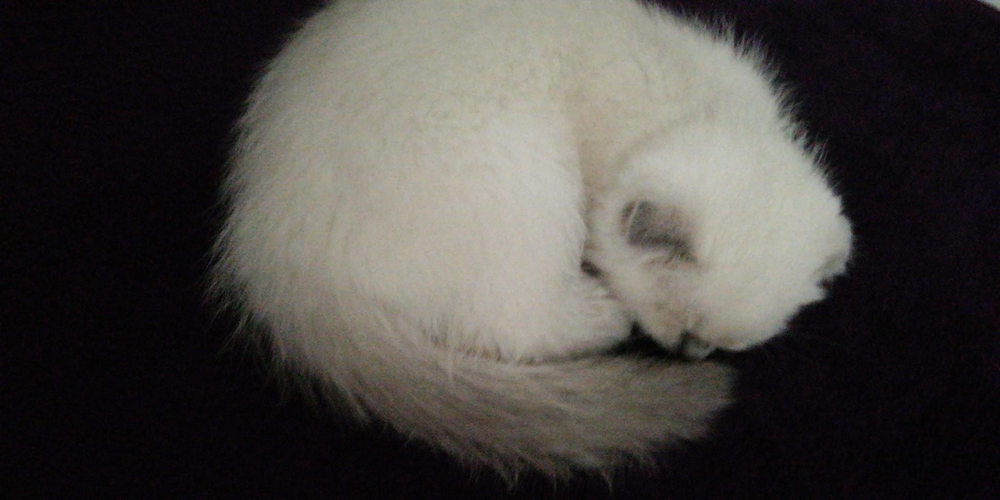

İlgi Alanlarım
- Film
- Dizi
- Friends
- Outlander
- Game Of Thrones
- Anne With An E
- The Last Kingdom
- Alies Grace
- The 100
- Bridgerton
- Kitap
- Çalıkuşu
- Pia Mater (Mater Serisi)
- Bin Muhteşem Güneş
- Alamut
- Hayvan Çiftliği


Ankara Üniversitesi Matematik Bölümünden mezun oldum. Yazılımla ilgileniyorum. Java ile Microservice çalıştım.
Şimdi de Patika.dev platformundan aldığım Başlangıç Seviye Frontend Web Development Patikası' na ait olan HTML dersinin ödevini yapıyorum.
Hayvanlardan korksam da hepsini çok severim. İki tane bizimle yaşayan hayvan arkadaşımız var. Bir tanesi bahçemizde yaşayan köpeğimiz Beton :). Diğeri de evimizde yaşayan Şila.
 